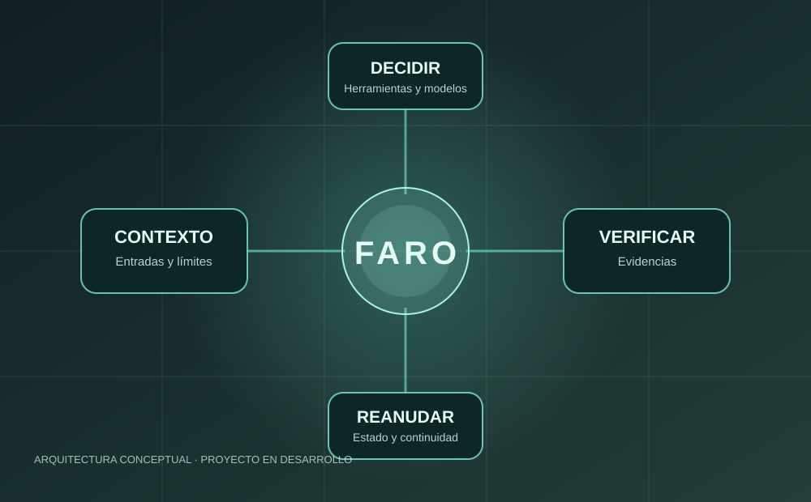

Arquitectura modular
Separar contexto, decisiones, límites y resultados verificables.
Plataforma propia para investigar la coordinación de tareas con agentes de IA: decisiones trazables, verificación y recuperación de contexto. Su objetivo es aprovechar modelos locales y recursos existentes, priorizando seguridad y coste.

Esquema conceptualSeparar contexto, decisiones, límites y resultados verificables.
Primeras estructuras Python y pruebas automatizadas sin acciones externas.
Distinguir ensayos sintéticos, prototipos y pruebas reales.
Estado real: núcleo inicial testeable y experimentos controlados. No hay plataforma autónoma comercial, servicios públicos ni despliegue en producción.
Un proyecto en evolución, con decisiones de diseño y pruebas documentadas. El trabajo se presenta por su estado real, no como un producto ya comercializado.
Volver al portfolio ↗